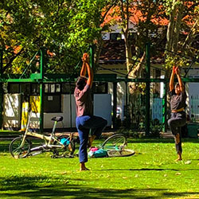
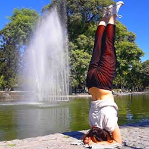
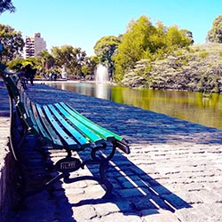
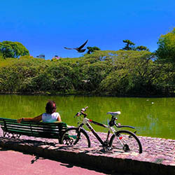
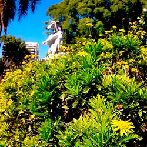
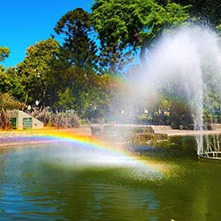
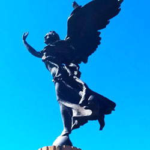
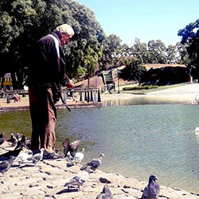
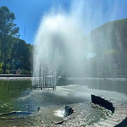
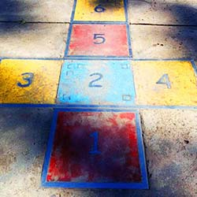

Actividades al Aire Libre

expresion corporal

ejercicios a la orilla del lago

caminatas

ciclismo y descanso
Contacto con la naturaleza

Flores y Aurora. E.Peynot

Arcoiris por Chorros de agua
Arte y Cultura

Victoria Alada. ERubino

Lago con peces KOI y patos

Parque obra del arquitecto Carlos Thays
Social e Infantil

Juegos clasicos de vereda